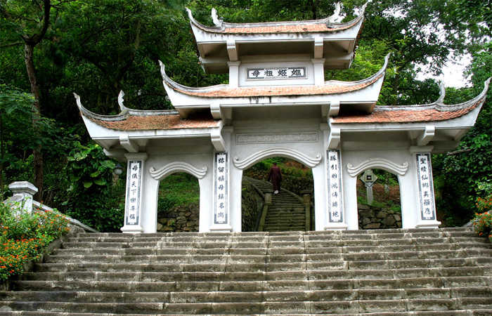
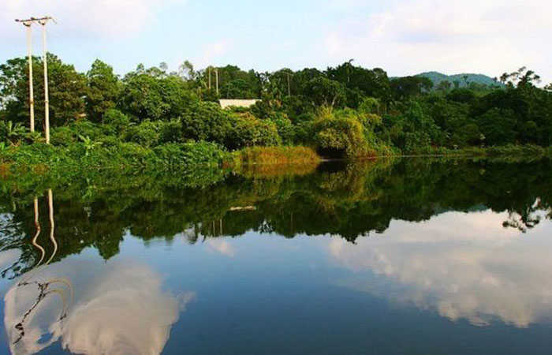
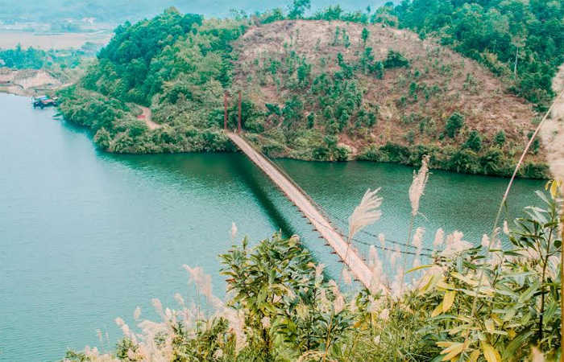
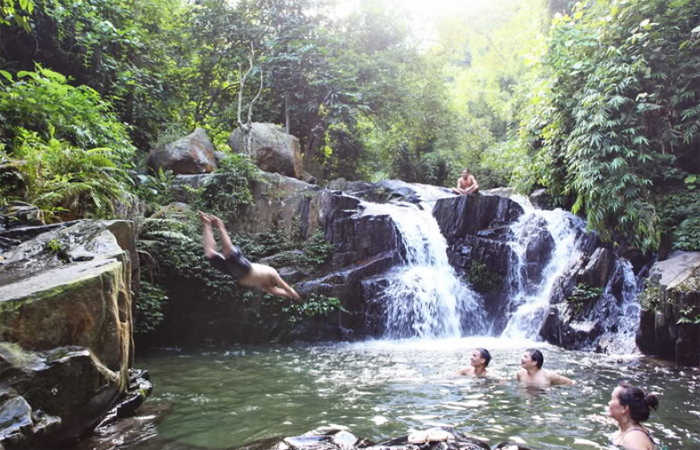
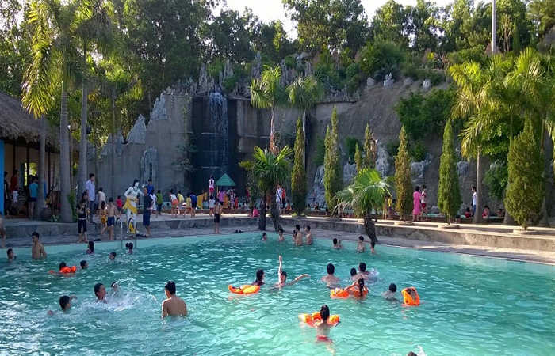
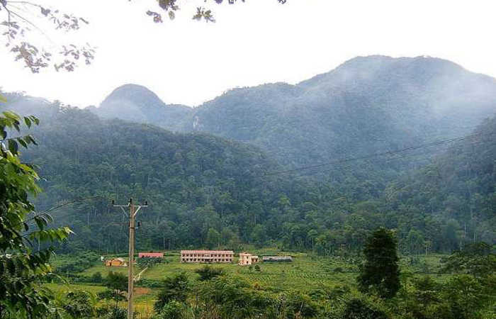
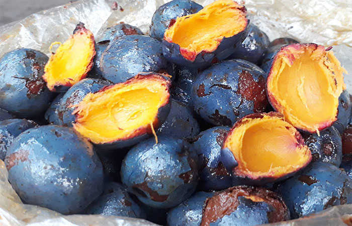
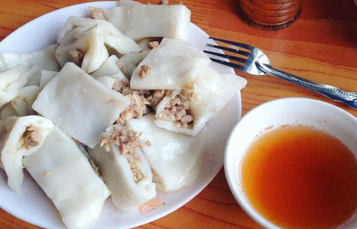

Phú Thọ được biết đến là vùng đất tổ, cội nguồn của dân tộc. Du lịch Phú Thọ thu hút nhiều du khách bởi nhiều thắng cảnh đẹp núi rừng hoang sơ, bình yên.
Với mọi người dân Việt Nam ta, ai ai cũng đều biết đến câu ca dao “Dù ai đi ngược về xuôi, nhớ ngày giỗ tổ mùng 10 tháng 3”. Mảnh đất Phú Thọ là cái nôi của cội nguồn, với những di tích nổi tiếng thu hút cộng đồng phượt thủ đến thăm quan. Một khi bạn đã chán chê đi đến những khu vui chơi sầm uất náo nhiệt thì hãy cùng chúng tôi tìm về với quê hương, cội nguồn dân tộc, tìm hiểu về những phong tục tập quán mà cha ông ta đã gìn giữa suốt hàng ngàn năm qua.
Để chuyến thăm quan được trọn vẹn, bạn hãy đọc những dòng chia sẻ này của Du Lịch Việt nhé.
I. Giới Thiệu Về Tỉnh Phú Thọ.
Đây là vùng đất thiêng liêng, nơi từ ngàn xưa các vua hùng dựng nước Văn Lang, nhà nước đầu tiên của Việt Nam có thủ đô là Phong Châu. Với truyền thống dựng nước và giữ nước, nhân dân Phú Thọ đã luôn bảo tồn và phát huy nền văn hoá rực rỡ lâu đời của dân tộc.
Những di chỉ khảo cổ văn hoá Sơn Vi, Đồng Đậu, Làng Cả và nhiều đình chùa, lăng tẩm ở quanh vùng núi Nghĩa Lĩnh minh chứng rằng đất Phong Châu là một trung tâm văn hoá cổ xưa của dân tộc thu hút nhiều du khách thăm quan.
Phú Thọ ngày nay có nhiều dân tộc cùng sinh sống, nhiều bản sắc văn hoá truyền thống và nền nhạc thấm sâu.
Tỉnh Phú Thọ với diện tích là 3.534,6 km² có trung tâm kinh tế là thành phố Việt Trì có 1 thị xã Phú Thọ và 11 huyện thành. Vùng đất cổ kính này có nhiều lễ hội , quan trọng nhất là lễ hội đền Hùng được tổ chức trọng thể hàng năm vào ngày mồng 10 tháng 3 âm lịch, ngày mà cả nước, dù xa hay gần bất cứ người dân Việt nào cũng nhớ rõ hướng về. Nhà nước đã quyết định lấy ngày 10 tháng 3 âm lịch là ngày giỗ tổ.
II. Thời Điểm Du Lịch Phú Thọ Lý Tưởng.
Phú Thọ ngoài đền Hùng còn có nhiều thắng cảnh đẹp, cạnh đó là những lễ hội đặc sắc được tổ chức nhiều tháng khác nhau. Vì thế bạn có thể du lịch Phú Thọ tại bất kỳ thời gian nào. Tuy vậy thời điểm mà Phú Thọ có nhiều du khách đến thăm quan nhất vẫn là ngày giỗ tổ mùng 10 tháng 3 âm lịch, là một ngày trọng đại của dân tộc.
Bên cạnh đó nếu bạn muốn thưởng ngoạn cảnh đẹp tại Phú Thọ như Đầm Ao Châu, vườn quốc gia Xuân Sơn… vẫn có thể đi vào các tháng mùa hè.
III. Hướng Dẫn Đi Đến Phú Thọ.
Tỉnh Phú Thọ cách thủ đô tầm 90km, du khách ở phương xa như Hồ Chí Minh, Đà Nẵng, Cần Thơ có thể đi máy bay đến sân bay Nội Bài rồi tiếp tục đến bến xe Mỹ Đình đón xe đến Phú Thọ.
Nếu bạn là người Hà Nội nhà có ô tô hoặc xe máy có thể theo lộ trình đại lộ Thăng Long – thị xã Sơn Tây – Cầu Trung Hà – Phú Thọ.
Khoảng cách từ bến xe Phú Thọ đến trung tâm tỉnh tầm 26km nên du khách có thể gọi taxi hoặc đi xe ôm hoặc thuê xe máy cho chủ động về thời gian.
IV. Khách Sạn Phú Thọ Lý Tưởng Cho Khách Du Lịch.
Sau khi đi đến Phú Thọ, thông thường với khách du lịch muốn tìm hiểu về vùng đất cổ này sẽ tìm về khách sạn để nghỉ ngơi và chuẩn bị trong hành trình khám phá. Theo kinh nghiệm của chúng tôi, bạn nên thuê khách sạn, nhà nghỉ gần khu di tích cần thăm quan hay địa điểm thắng cảnh để tiện cho việc đi lại. Dưới đây là một gợi ý về khách sạn Phú Thọ du khách có thể tham khảo.
1. Thanh Thuy Resort.
Khách sạn toạ lạc tại khu vực La Phù, Thanh Thủy, Phú Thọ. Điện thoại: 096 224 93 38. Resort nằm cách trung tâm thành phố Việt Trì 30km hạ tầng hiện đại nên bạn có thể dễ dàng đi đến các điểm du lịch khác. Với đầy đủ tiện nghi và giá thành khá rẻ chỉ từ 300k – 500k/ngày, là một sự lựa chọn tốt cho các phượt thủ, du khách.
2. Khách sạn Ngọc Sơn
Là một sự lựa chọn đúng đắn cho các phượt thủ. Ngọc Sơn là một khách sạn bình dân nhưng đầy tiện nghi, toạ lạc tại Bảo Yên, Thanh Thủy, số điện thoại 0210 6555 888.
Những tiện ích được nhiều bạn phượt thủ yêu thích như bồn nước nóng, hồ bơi, câu cá, phòng tập thể dục,… bên cạnh đó là dịch vụ cho thuê xe đạp, taxi đưa đón, quán bar. Giá thuê phòng cũng chỉ tầm 300k/400k/ngày khá rẻ đấy.
3. Family homestay
Là một nhà nghỉ mang vẻ đẹp cổ kính. Khi ở đây du khách sẽ tận hưởng cảm giác mới lạ chốn thôn quê mà không nơi nào có được. Tại đây bạn sẽ thấy được các buổi sinh hoạt của các dân tộc mới lạ. Du khách có thể hoà mình vào thiên nhiên, có những phút giây thư thái tâm hồn. Giá thuê phòng tại Family homestay chỉ từ 200k – 300k/ngày tuỳ thời điểm thuê nhé.
Địa chỉ: Bản Cói – Xóm dù, xã Xuân Sơn, Tân Sơn, Phú Thọ; số điện thoại: 0979.775.282
4. Mường Thanh luxury Phú Thọ
Nếu du khách muốn có một kỳ nghĩ thoải mái, bên cạnh những tiện nghi hiện đại thì có thể ghé khách sạn Mường Thanh luxury Phú Thọ. Toạ lạc tại địa chỉ: Lô CC17, Quảng trường Hùng Vương, Tp. Việt Trì, Phú Thọ – Số điện thoại: 0210 3616 666. Giá cả phòng từ 1tr đến 1tr2/ngày nhé.
V. Di Chuyển Tại Phú Thọ.
Phú Thọ là một tỉnh đang phát triển, hạ tầng khang trang hiện đại, để đi lại từ nơi này đến nơi khác, du khách có thể lựa chọn nhiều phương tiện khác nhau. Nếu bạn ở khách sạn có thể liên hệ với phòng lễ tân để thuê xe máy. Giá thuê xe có thể từ 120k/ngày – 25k/ngày tuỳ loại xe số hay tay ga. Nếu bạn thuê xe ô tô để đi cùng gia đình vẫn có thể để dàng với nhiều dịch vụ cho thuê xe ở Phú Thọ.
Nếu bạn muốn đi bằng taxi có thể liên hệ một số hãng taxi uy tín đang hoạt động trên địa bàn như:
+ Taxi Oanh Khải: (0210) 3.63.63.63; Taxi Mai Linh Phú Thọ: (0210) 3.688.688;
+ Taxi Nam Cường: (0210) 3.68.68.68; Taxi Thanh Tuyền: (0210) 3.811.811;
+ Taxi Nam Dương: (0210) 3.61.61.61; Taxi Tuấn Huy (H. Cẩm Khê): (0210) 3.889.889;
+ Taxi An Hòa (H. Thanh Ba): (0210) 3.662.666; Taxi Hoa Linh (H. Phù Ninh): (0210) 3.762.762 – (0210) 3.678.678;
+ Taxi Biển Vàng (H. Phù Ninh): (0210) 3.766.766
VI. Địa Điểm Du Lịch Phú Thọ Không Thể Bỏ Qua.
Sau khi đã có nơi ở ổn định, sáng ngày hôm sau du khách có thể hành trình khám phá vùng đất mới. Dưới đây là một số địa điểm du lịch Phú Thọ không thể bỏ qua.
1. Đền Hùng.

Là một di tích lịch sử nổi tiếng của nước ta, được người dân cả nước biết đến là một công trình kiến trúc đẹp nằm trên đỉnh núi Nghĩa Lĩnh, cách thành phố Việt Trì tầm 6 – 7km. Công trình này bao gồm đền Hạ nơi tổ tiên dân tộc ta sinh ra. Đền Trung nơi vua Hùng ngày xưa để bàn việc nước, đền Thượng nơi thờ cúng thần linh. Trước đây vua Hùng đã lập đền thờ Thánh Gióng, vị anh hùng đã đánh đuổi giặc Ân bão vệ bờ cõi.
Ngoài ra khu vực đền Hùng còn có đền Giếng ở phía Đông Nam dưới chân núi Nghĩa Lĩnh. Trong đền có giếng Ngọc nên được gọi là đền Giếng. Truyện xưa kể lại hai công chúa Tiên Dung và Ngọc Hoa, con của vua Hùng thứ 18 thường soi mặt giếng để chải tóc, vấn khăn.
Trên núi Nghĩa Lĩnh còn có nhiều di vật và phế tích từ thời nước Văn Lang đến thời nước Đại Việt như rìu đá, giáo đồng, bát đĩa gốm sứ, cột đá, khạp đất nung, gạch ngói… Khu di tích đền Hùng hàng năm đã đón hàng chục vạn lượt du khách khắp mọi miền đến viếng, hành hương, vãn cảnh.
2. Đền Quốc mẫu Âu Cơ.

Là một ngôi đền cổ kính nằm trong khu di tích đền Hùng. Cảnh vật thanh bình của ngôi đền dưới gốc đa cổ thụ. Hai bên là giếng Loan và giếng Phượng, phía trước là núi Giác, đằng sau là dòng sông Hồng hiền hoà.
Ngôi đền được người xưa thiết kế theo lối kiến trúc thời kỳ Đông Sơn. Tạo nên một không khí nhẹ nhàng, thanh thản khi du khách viếng thăm.
3. Bảo Tàng Hùng Vương.
Là một nơi trưng bày nhiều cổ vật giá trị có liên quan đến lịch sử hình thành và phát triển của Phú Thọ bắt đầu từ thời các vua Hùng cho đến thời đại ngày nay. Bạn là người yêu thích lịch sử, hay thích tìm hiểu về nền văn hoá nước ta thời xưa có thể ghé bảo tàng Hùng Vương thăm quan. Qua hình ảnh các tư liệu, hiện vật được trưng bày trong bảo tàng, bạn sẽ thấy được lịch sử hào hùng vẻ vang của dân tộc.
4. Đầm Ao Châu.

Ao Châu là một đầm nước lớn ở địa phận ba xã Ấm Thượng, Ấm Hạ, và Y Sơn huyện Hạ Hoà, có diện tích gần 2km2, cách thành phố Việt Trì tầm 70km.
Đầm có hình dạng đặt biệt, trông như cái đầu trâu có hai sừng choải về phía sông Thao và sông Chảy, có 99 ngách là những con suối đan xen nhau theo các dãy đồi với 100 đảo nhỏ nằm trong đầm.
Xung quanh đầm Ao Châu là những đồi cây nặng trĩu trái. Ở đây có một số rùa vàng và một số loại thuỷ sản quý hiếm. Nước trong đầm trong xanh quanh năm. Du khách có thể du ngoạn, bơi thuyền, câu cá hay leo núi ở khu vực đầm này hàng tuần.
5. Hồ Ly.

Nằm tại xã Thượng Long, huyện Yên Lập, là địa điểm du lịch vô cùng mới mẻ và lý thú, được ví như là một “tuyệt tình cốc” tại Phú Thọ.
Du khách từ thủ đô đi theo đường QL 32 sang cầu Trung Hà, đi được hơn 100km, đến thị trấn Yên Lập rồi hỏi đường đến xã Thượng Long. Hồ nằm ở cuối xã, đường nhỏ chưa có biển hướng dẫn đi lại. Tuy nhiên, mọi công sức của quý khách sẽ được đền đáp khi được chứng kiến vẻ đẹp hoang sơ của hồ Ly
Để được du ngoạn quanh hồ, bạn có thể thuê thuyền máy với giá 100k đồng/lượt, sẽ có người lái thuyền đưa bạn đi thám hiểm đến các khu vực non xanh nước biếc quanh hồ, ngắm nhìn nhiều loài thuỷ sản.
Nhiều phượt thủ cảm thấy rất ấn tượng bởi hình ảnh chiếc cầu treo bằng sắt, bắt qua lòng hồ, nối liền hai quả núi lại với nhau. Đứng trên cầu bạn có thể thu vào tầm mắt khung cảnh núi rừng, vẻ đẹp ngoạn mục của hồ Ly
6. Đồi Chè Long Cốc.
Bạn không cần phải lặn lội lên đến cao nguyên Mộc Châu vẫn có thể chiêm ngưỡng được vẻ đẹp ngút ngàn của đồi chè.
Toạ lạc tại huyện Tân Sơn, tỉnh Phú Thọ là một đồi chè xanh mướt, trập trùng, cung đường quanh co nối liền, tạo nên vẻ đẹp huyền bí khiến cho du khách không khỏi ngỡ ngàng.
Tại đây du khách sẽ được đắm chìm trong một không gian yên tĩnh, khí hậu trong lành, hương thơm ngát đặt trưng của đồi chè Long Cốc của Phú Thọ. Tại đây bạn có thể cùng người thân chụp những tấm hình để lưu lại những khoảnh khắc đẹp nhất.
7. Ao Giời – Suối Tiên

Là một dòng suối đẹp, bắt nguồn từ núi Nả, một đỉnh núi cao thuộc huyện Hạ Hoà. Xung quanh hình thành nên nhiều dòng thác lớn, có thác cao 20m, tạo nên cảnh quan thiên nhiều kỳ thú.
Khi thăm quan thác vào mùa mưa, dòng nước từ trên cao đổ xuống ầm ầm xuống lòng hồ, tạo nên không gian tráng lệ. Vào mùa hè thì vẻ đẹp lại khác hẳn, dưới chân thác hình thành nên những bãi đá cuội ngũ sắc lấp lánh, vẻ đẹp kỳ ảo.
8. Vườn quốc gia Xuân Sơn.
Là một khu rừng nổi tiếng với vẻ đẹp hoang sơ, tự nhiên, hệ thống động thực vật phong phú. Khi thăm quan vườn quốc gia Xuân Sơn, khách du lịch Phú Thọ sẽ được tận mắt thấy những khu rừng chò trỉ đẹp nhất miền Bắc và nhiều loài cây quý hiếm mọc san sát nhau như rau sắng, dẻ, mộc lan…
Ngoài ra tại Xuân Sơn, du khách đừng bỏ qua việc thăm quan núi voi, núi Cẩn, núi Ten cùng các con suối như suối Lấp, suối Thang cùng nhiều thác nước đẹp khác. Cảnh thác bạc hoà quyện với màu xanh tươi của rừng gìa làm cho cảnh quan nơi vườn quốc gia Xuân Sơn trở nên thơ mộng huyền ảo.
9. Suối Khoáng Thanh Thuỷ.

Là một suối khoáng nóng tự nhiên, với tác dụng có lợi cho sức khoẻ khi được ngâm mình. Tại đây du khách sẽ được đắm mình trong bồn nước khoáng nóng tự nhiên, tận hưởng những giây phút thư thái, hoà mình vào thiên nhiên trong xanh.
10. Núi Thắm

Còn có tên gọi khác là núi Đầu Rồng, núi có độ dài tầm 4km chạy dọc lên khu du lịch Thanh Ba.
Khi thăm quan núi Thắm, lên đến đỉnh núi, du khách sẽ thấy một ao nhỏ gọi là ao Tiên, nước trong xanh và không bao giờ cạn. Quanh núi Thắm là nhiều ngọn đồi cây xanh mướt nằm gần kề nhau, nhấp nhô như hình bát úp.
Núi Thắm trở thành một thắng cảnh đẹp thu hút nhiều du khách thập phương đến thăm quan.
VII. Đặc Sản Phú Thọ.
Sau những chặng đường vui chơi thoả thuê, lúc dừng chân được thưởng thức những món ăn ngon là điều mà nhiều du khách mong muốn. Dưới đây là những món ăn đặc sản hấp dẫn mà nhiều khách du lịch Phú Thọ yêu thích.
1. Cọ Ỏm

Trái cọ là một loại trái cây đặc trưng tại Phú Thọ. Nhiều hàng quán địa phương đã chế biến trái cọ thành nhiều món ăn hấp dẫn. Bằng những cách chế biến đơn giản, không kỳ công như một số đặc sản khác, món cọ Ỏm có vị ngọt ngọt, bùi bùi, ngậy ngậy khó cưỡng trở thành món ăn được nhiều người muốn thưởng thức.
2. Bánh Tai.

Là một món ăn đặc sản hấp dẫn cuốn hút. Chỉ với nguyên liệu là thịt lợn băm và bột gạo tẻ những người đầu bếp tại Phú Thọ đã làm nên một chiếc bánh tai có hương vị đặc trưng mà không nơi nào có thể có được.
3. Thịt chua
Để làm nên món ăn vô cùng thơm ngon này thì người dân Phú Thọ đã chọn nguyên liệu là thịt của giống lợn Lửng, thịt lợn này được giới thực khác đánh gía là thơm ngon. Bước đầu người ta nướng qua, sau đó thái thịt thành từng miếng nhỏ ướp gia vị đặc trưng, trộn đều với thính rồi ủ tầm 5 -7 ngày là thành món thịt chua trứ danh.
4. Tằm Cọ.
Là món ăn có hương vị đặc trưng khó quên. Khi nên thử món tằm Cọ bạn sẽ cảm giác được vị béo của tằm hoà quyện với vị thơm của lá cọ một cách hài hoà đặc sắc. Khi ăn du khách có thể chấm một ít muối ớt sẽ làm tăng thêm vị giác làm cho món ăn tăng phần hấp dẫn đấy.
Ngoài những địa danh thăm quan đầy hấp dẫn và những món ăn đặc sắc trên, du lịch Phú Thọ còn ẩn chứa nhiều điều lý thú đang chờ du khách đến khám pha!